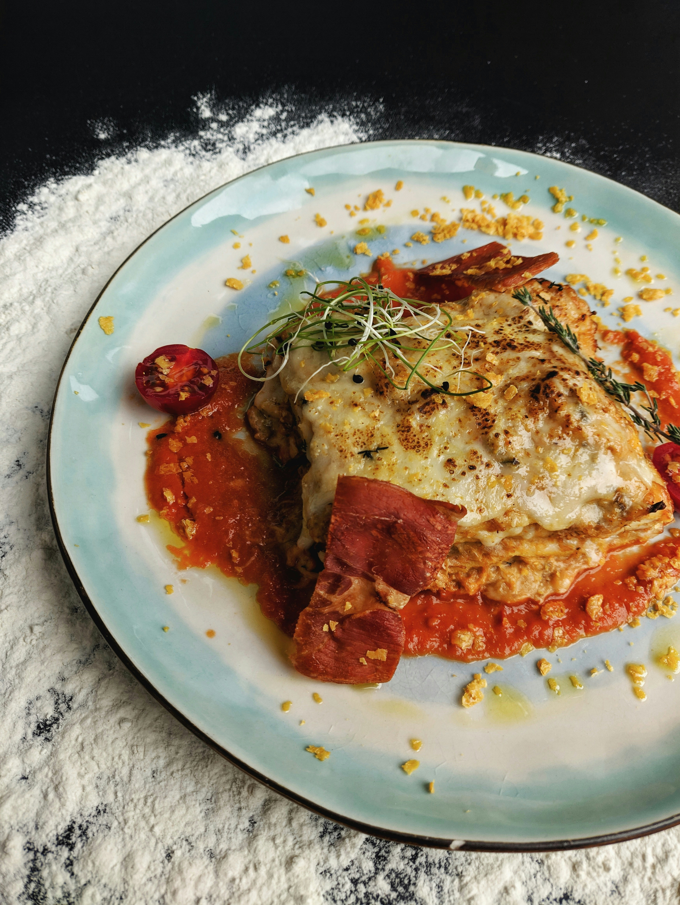

Lasagna

Description
Lasagna is a classic Italian dish made with layers of pasta, meat sauce, and cheese. It's a hearty and comforting
meal that's perfect for family dinners or special occasions.
Ingredients
- Ground Beef
- Spaghetti Sauce
- Cheddar and mozzerella cheese
- Eggs
- Parsley, salt, black pepper
- Lasagna sheets
Steps
- Preheat the oven to 375°F (190°C).
- In a large skillet, cook the ground beef over medium heat until browned. Drain any excess fat.
- Add the spaghetti sauce to the skillet and simmer for 10 minutes.
- In a separate bowl, mix together the cheddar and mozzarella cheese with the eggs, parsley, salt, and pepper.
- Spread a thin layer of the meat sauce in the bottom of a 9x13 inch baking dish. Layer lasagna sheets on top of the sauce, followed by more meat sauce and cheese mixture. Repeat the layers until all ingredients are used, ending with a layer of meat sauce and cheese on top.
- Cover the dish with aluminum foil and bake for 25 minutes. Remove the foil and bake for an additional 25 minutes, or until the cheese is bubbly and golden brown.
- Let the lasagna cool for 10 minutes before serving. Enjoy!
Home